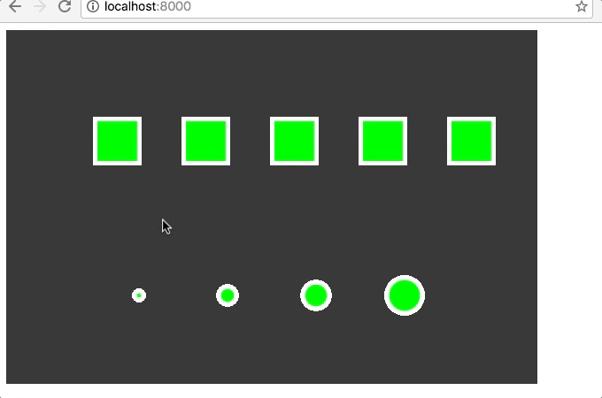

We have spent this past Interim working on programming. The difference between programming and web design (which we did in interim 2), is that programming gets computers to execute logic, while web design just displays things on a screen.
Today's PRACTICE interim will give you the opportunity to display your knowledge and understanding of programming structures that are the fundamentals building blocks that allow computers to execute this logic on our behalf. When completed, your final product should look something similar to the GIF below, but it may look different as I've allowed you some choice in how you create things so that everyone's looks a little different.
You must use Cloud 9 to complete this interim. Go to www.c9.io and create a new workspace called q3-interim-assessment.
If you get an error when trying to create a new workspace, delete some old workspaces first, then try again. If the error still persists, raise your hand and ask the test proctor to call for Mr. Budisantoso
Back to top.Create 4 files for your project.
Add the appropriate html code to your index.html files so that the style.css, script.js, and sketch.js files are correctly linked. Make sure to also include the p5js library which you can find at www.p5js.org.
Back to top.In your sketch.js file, create setup and draw functions so that your canvas has a width of 600 pixels and a height of 400 pixels.
Back to top.In your setup function, make a background of any color of your choosing. If you can't decide, make it black.
Back to top.Create a function called paint that is separate from your setup() and draw functions().
Back to top.
Using conditional logic, call on the paint fuction if the mouse is pressed. In other words, if the user clicks the mouse (or laptop trackpad), then the paint function will run by drawing ellipses to the screen. If the user doesn't press the mouse, then the nothing happens.
Back to top.Create a function called rowOfSquares that is separate from all your other functions. Don't forget to call on this function in draw() when you finish it.
Back to top.
Create a function called rowOfCircles that is separate from all your other functions. Don't forget to call on this function in draw() when you finish it.
Back to top.Create an array called sizes that contains at least 4 elements that are positive integers (whole numbers).
Back to top.
In order to submit, you CANNOT just copy the c9 preview link,
YOU MUST PUBLISH IT TO GITHUB FIRST.
Refer to your notes if you don't remember how to upload your content to github. User your terminal and git commands to get your code to github. If you cannot see your terminal in c Cloud9, click "View" in the menu, then select "Console."
If the console is empyty, make sure to click the "+" symbol and select "New Terminal"
Back to top.You will lose points for this task if you do not submit a working GitHub pages link. Make sure that it works. Refer to your study guide for instructions on how to do that, to include the 404 error section.
Back to top.If you're done early, here are some ideas of things you can add. These will not be graded unless you complete the 15 main tasks first. The list below will add extra points, if you make mistakes in the first 15 tasks.